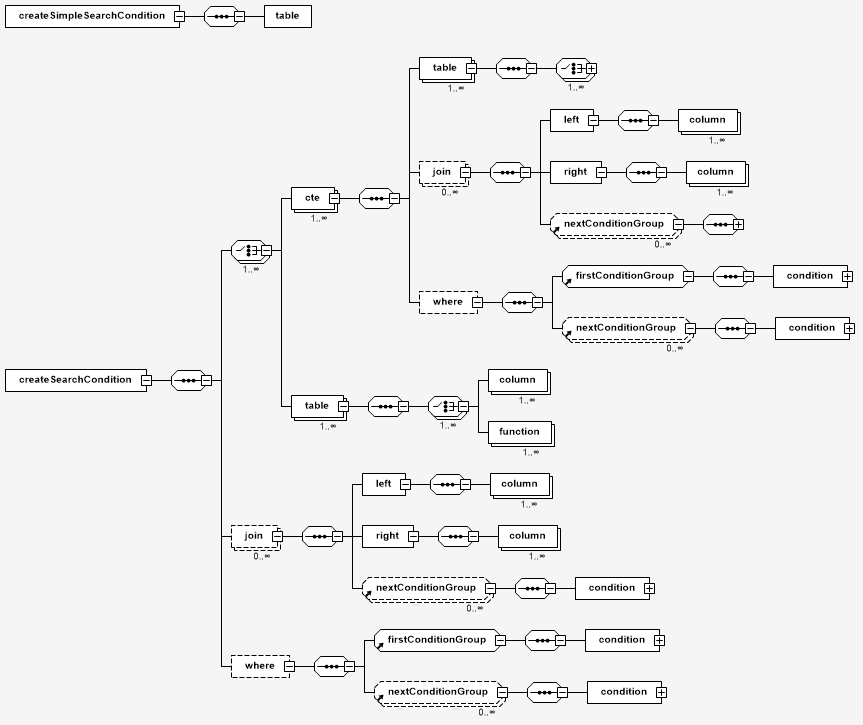
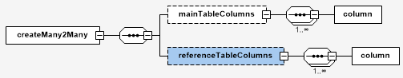

Scenarios for building the registry physical data model
- 1. Introduction
- 2. Table modeling scheme and history maintenance function
- 3. Database search criteria modeling schema
- 3.1. Prerequisites
- 3.2. XML template description rules
- 3.3. XML template of the simple search criterion design (Scenario 1)
- 3.4. XML template of the search criterion design (Scenario 2)
- 3.5. XML template of the search criterion design (Scenario 3)
- 3.6. XML template of the search criterion design (Scenario 4)
- 3.7. XML template for deleting the search criterion
- 3.8. Full XML template of the search criteria design
- 4. Schema of modeling relationships between entities in the database
- 5. Schema for creating custom data types
| 🌐 This document is available in both English and Ukrainian. Use the language toggle in the top right corner to switch between versions. |
|
On this page you will find a list of the up-to-date scenarios for building a physical data model. However, it has to be borne in mind that not all tags are indicated here. For a complete list of custom tags, please follow the link Liquibase extensions for data modeling. |
1. Introduction
This document is a guide for developers/data administrators to describe scenarios for creating a physical data model using the Liquibase tool and extensions of the Liquibase data model change management system.
Liquibase uses special templates to describe the rules for building a physical registry data model, which must be created by the modeler in the XML format.
An XML template is a set of rules represented by the XML tags (change types) to generate appropriate SQL scenarios in PostgreSQL.
Liquibase supports both standard change types, and additionally created or extended change types.
2. Table modeling scheme and history maintenance function
The schema describes the design rules of an XML template, which application generates SQL scenarios to create a pair of tables (historical and current).
2.1. Output SQL syntax schema
-- the table with historical data
CREATE TABLE table_name_hst (
-- list of business columns defined by XML pattern
column_name data_type [, ... ]
-- list of predefined for historical table auxiliary columns
column_name data_type [, ... ]
-- other definitions
...
);
-- the table with current data
CREATE TABLE table_name (
-- list of business columns defined by XML pattern
column_name data_type [, ... ]
-- list of predefined for recent data table auxiliary columns
column_name data_type [, ... ]
-- other definitions
...
)2.2. XML template description rules
The schema defines an additional historyFlag attribute for the standard createTable element.
The historyFlag attribute implements the historical tables DDM function.
historyFlag must be true, in this case Liquibase generates DDL for two tables that contain additional fields:
-
Historical data:
table_name=ENTITY_NAME_hst(append only for adding new data to the table is allowed, see https://en.wikipedia.org/wiki/Append-only). -
Current data:
table_name=ENTITY_NAME(all DML are allowed).
Additional fields for each of the tables are different and begin with the ddm_ prefix. See the example below.
|
2.3. XML template describing table creation and maintenance of historical data
<?xml version="1.1" encoding="UTF-8" standalone="no"?>
<databaseChangeLog
xmlns="http://www.liquibase.org/xml/ns/dbchangelog"
xmlns:xsi="http://www.w3.org/2001/XMLSchema-instance"
xmlns:ext="http://www.liquibase.org/xml/ns/dbchangelog-ext"
xsi:schemaLocation="http://www.liquibase.org/xml/ns/dbchangelog http://www.liquibase.org/xml/ns/dbchangelog/dbchangelog-4.2.xsd
http://www.liquibase.org/xml/ns/dbchangelog-ext dbchangelog-ext.xsd">
<changeSet id="table pd_subject_role" author="registry owner">
<comment>CREATE TABLE pd_subject_role</comment>
<createTable tableName="pd_subject_role" ext:historyFlag="true">
<column name="role_id" type="BIGINT">
<constraints nullable="false" primaryKey="true" primaryKeyName="pk_pd_subject_role"/>
</column>
<column name="role_name" type="TEXT">
<constraints nullable="false"/>
</column>
</createTable>
</changeSet>
</databaseChangeLog>2.4. Generated SQL syntax
As a result of processing an XML template, Liquibase generates an SQL scenario that is logically divided into several parts:
1) Create append-only tables containing historical data:
-- Creates historical table
CREATE TABLE pd_subject_role_hst
(
role_id BIGINT NOT NULL,
role_name TEXT NOT NULL,
ddm_created_at TIMESTAMP WITH time zone DEFAULT Now()
NOT NULL,
ddm_created_by TEXT NOT NULL,
ddm_dml_op CHAR(1) NOT NULL,
ddm_system_id UUID NOT NULL,
ddm_application_id UUID NOT NULL,
ddm_business_process_id UUID,
ddm_process_id TEXT,
ddm_digital_sign TEXT,
ddm_digital_sign_derived TEXT,
ddm_digital_sign_checksum TEXT,
ddm_digital_sign_derived_checksum TEXT,
CONSTRAINT pk_pd_subject_role PRIMARY KEY (role_id),
CONSTRAINT ui_pd_subject_role_hst UNIQUE (role_id, ddm_created_at)
);2) Create a table containing current data pd_subject_role:
-- Creates table with current data
CREATE TABLE pd_subject_role
(
role_id BIGINT NOT NULL,
role_name TEXT NOT NULL,
ddm_created_at TIMESTAMP WITH time zone DEFAULT Now() NOT NULL,
ddm_created_by TEXT NOT NULL,
ddm_updated_at TIMESTAMP WITH time zone DEFAULT Now() NOT NULL,
ddm_updated_by TEXT NOT NULL,
CONSTRAINT pk_pd_subject_role PRIMARY KEY (role_id)
);Complete generated SQL scenario
Click to expand the block
-- Creates historical table
CREATE TABLE pd_subject_role_hst
(
role_id BIGINT NOT NULL,
role_name TEXT NOT NULL,
ddm_created_at TIMESTAMP WITH time zone DEFAULT Now()
NOT NULL,
ddm_created_by TEXT NOT NULL,
ddm_dml_op CHAR(1) NOT NULL,
ddm_system_id UUID NOT NULL,
ddm_application_id UUID NOT NULL,
ddm_business_process_id UUID,
ddm_process_id TEXT,
ddm_digital_sign TEXT,
ddm_digital_sign_derived TEXT,
ddm_digital_sign_checksum TEXT,
ddm_digital_sign_derived_checksum TEXT,
CONSTRAINT pk_pd_subject_role PRIMARY KEY (role_id),
CONSTRAINT ui_pd_subject_role_hst UNIQUE (role_id, ddm_created_at)
);
-- Drops primary key
ALTER TABLE PUBLIC.pd_subject_role_hst
DROP CONSTRAINT pk_pd_subject_role;
REVOKE ALL privileges ON TABLE pd_subject_role_hst FROM PUBLIC;
-- grants read privileges for the role
GRANT SELECT ON pd_subject_role_hst TO application_role;
-- Creates table with current data
CREATE TABLE pd_subject_role
(
role_id BIGINT NOT NULL,
role_name TEXT NOT NULL,
ddm_created_at TIMESTAMP WITH time zone DEFAULT Now() NOT NULL,
ddm_created_by TEXT NOT NULL,
ddm_updated_at TIMESTAMP WITH time zone DEFAULT Now() NOT NULL,
ddm_updated_by TEXT NOT NULL,
CONSTRAINT pk_pd_subject_role PRIMARY KEY (role_id)
);
REVOKE ALL privileges ON TABLE pd_subject_role FROM PUBLIC;
GRANT SELECT ON pd_subject_role TO application_role;3. Database search criteria modeling schema
| The database search criteria are called Search Conditions. |
The database search criteria modeling schema describes the rules of the searchConditions XML template for generating appropriate SQL scenarios for creating data views and search support indexes.
Based on each searchCondition, a corresponding REST endpoint is generated at the API level of the data platform, through which requests subsequently get to the database.
3.1. Prerequisites
3.1.1. Search conditions
1) Find person_full_name by the value and return the list of all fields of the pd_processing_consent table.
2) Find legal_entity_name and edrpou (edrpou_val) by the values of the pd_processing_consent_subject table and return the list of person_full_name, person_pass_number, consent_date from the pd_processing_consent table together with the search criteria (legal_entity_name and edrpou (edrpou_val) of the pd_processing_consent_subject table).
3) Find person_full_name and person_pass_number by the value from the pd_processing_consent table and return the list of legal_entity_name and edrpou (edrpou_val) of the pd_processing_consent_subject table together with the search criteria (person_full_name, person_pass_number, consent_date from the pd_processing_consent table).
3.1.2. Schema of the outcoming SQL query
The following is the SQL syntax schema that is necessary to generate using the appropriate XML template:
CREATE OR replace VIEW <view_name> AS SELECT <column_list>
FROM <table_1> t1
JOIN <table_2> t2
ON t1.<join_column> = t2.<join_column>
WHERE <conditions>;3.2. XML template description rules
XML template diagram

The first <ext:condition> tag in the <ext:where> condition must not contain the logicOperator attribute 'logicOperator'; all the other <ext:condition> tags must contain it.
|
The first <ext:condition> tag, like all others, in the <ext:join> condition must contain the logicOperator attribute.
|
The logicOperator attribute accepts the and and or values.
|
If the <ext:condition> tag is nested within another, they are wrapped in brackets.
|
The operator accepts the following values:
| Value | Explanation | Symbol (Unicode) | Comment |
|---|---|---|---|
|
equals |
= |
|
|
not equal |
<> |
|
|
greater than |
> |
|
|
greater than or equals to |
>= |
|
|
less than |
< |
|
|
less than or equals to |
⇐ |
|
|
|||
|
|||
|
is null |
If the value = |
|
|
similar |
~ |
-
Value: If you need to pass a text value, then you need to wrap this value in single quotation marks.
-
<ext:function>: It allows to use the aggregate functions (min(),max(),avg(),count(),sum()), and the table fields used in these functions are removed from the output (SELECT). All other fields are included into the grouping (GROUP BY).
3.3. XML template of the simple search criterion design (Scenario 1)
This example allows you to create a view named pd_processing_consent_simple and the corresponding index.
<changeSet author="registry owner" id="searchCondition pd_processing_consent_simple">
<comment>CREATE search condition pd_processing_consent_simple</comment>
<ext:createSimpleSearchCondition name="pd_processing_consent_simple" indexing="true" limit="all">
<ext:table name="pd_processing_consent" alias="c" searchType="equal" searchColumn="person_full_name"/>
</ext:createSimpleSearchCondition>
</changeSet>Generated SQL syntax
CREATE OR REPLACE view pd_processing_consent_simple_v
AS
SELECT c.*
FROM pd_processing_consent c;
CREATE INDEX ix_pd_processing_consent_simple_pd_processing_consent_person_full_name ON pd_processing_consent(
lower(
cast(person_full_name as varchar)
)
);3.4. XML template of the search criterion design (Scenario 2)
This example allows you to create a view named pd_processing_consent_1 and the corresponding index.
<changeSet author="registry owner" id="searchCondition pd_processing_consent_1">
<comment>CREATE search condition pd_processing_consent_1</comment>
<ext:createSearchCondition name="pd_processing_consent_1" indexing="true">
<ext:table name="pd_processing_consent" alias="c">
<ext:column name="person_full_name" searchType="equal" returning="true" type="text"/>
<ext:column name="person_pass_number" returning="true" type="varchar"/>
<ext:column name="consent_date" returning="true"/>
</ext:table>
<ext:table name="pd_processing_consent_subject" alias="cs">
<ext:column name="legal_entity_name" alias="srch_legal_entity_name" returning="true"/>
<ext:column name="edrpou" alias="srch_edrpou" returning="true"/>
</ext:table>
<ext:join type="inner">
<ext:left alias="c">
<ext:column name="consent_id"/>
</ext:left>
<ext:right alias="cs">
<ext:column name="consent_id"/>
</ext:right>
</ext:join>
</ext:createSearchCondition>
</changeSet>Generated SQL syntax
CREATE
OR REPLACE VIEW pd_processing_consent_1_v AS
SELECT
c.person_full_name,
c.person_pass_number,
c.consent_date,
cs.legal_entity_name AS srch_legal_entity_name,
cs.edrpou AS srch_edrpou
FROM
pd_processing_consent AS c
INNER JOIN pd_processing_consent_subject AS cs ON (c.consent_id = cs.consent_id);
CREATE INDEX IF NOT EXISTS ix_pd_processing_consent__person_full_name ON pd_processing_consent(
lower(
cast(person_full_name as varchar)
)
);3.5. XML template of the search criterion design (Scenario 3)
The following example allows you to create a view named pd_processing_consent_2 and sort records in the descending order (DESC).
<changeSet author="registry owner" id="searchCondition pd_processing_consent_2">
<comment>CREATE search condition pd_processing_consent_2</comment>
<ext:createSearchCondition name="pd_processing_consent_2" limit="1">
<ext:table name="pd_processing_consent" alias="c">
<ext:column name="person_full_name" searchType="equal" returning="true"/>
<ext:column name="person_pass_number" returning="true"/>
<ext:column name="consent_date" returning="true" sorting="desc"/>
</ext:table>
<ext:table name="pd_processing_consent_subject" alias="cs">
<ext:column name="legal_entity_name" returning="true"/>
<ext:column name="edrpou" returning="true"/>
</ext:table>
<ext:join type="inner">
<ext:left alias="c">
<ext:column name="consent_id"/>
</ext:left>
<ext:right alias="cs">
<ext:column name="consent_id"/>
</ext:right>
</ext:join>
</ext:createSearchCondition>
</changeSet>Generated SQL syntax
CREATE
OR REPLACE VIEW pd_processing_consent_2_v AS
SELECT
c.person_full_name,
c.person_pass_number,
c.consent_date,
cs.legal_entity_name,
cs.edrpou
FROM
pd_processing_consent AS c
INNER JOIN pd_processing_consent_subject AS cs ON (c.consent_id = cs.consent_id)
ORDER BY
c.consent_date DESC;3.6. XML template of the search criterion design (Scenario 4)
This example creates a view named SearchCondition.
<changeSet author="registry owner" id="SearchCondition">
<ext:createSearchCondition name="SearchCondition" limit="1">
<ext:table name="table_one" alias="to">
<ext:column name="name" alias="to_name"/>
<ext:column name="type" searchType="equal"/>
<ext:function name="count" alias="cnt" columnName="uuid"/>
</ext:table>
<ext:table name="table_two" alias="tt">
<ext:column name="name" alias="tt_name"/>
<ext:column name="code" searchType="contains"/>
<ext:function name="sum" alias="sm" columnName="code"/>
</ext:table>
<ext:join type="left">
<ext:left alias="np">
<ext:column name="level2"/>
</ext:left>
<ext:right alias="rn">
<ext:column name="code"/>
</ext:right>
</ext:join>
<ext:where>
<ext:condition tableAlias="to" columnName="type" operator="eq" value="'char'">
<ext:condition logicOperator="or" tableAlias="to" columnName="type" operator="eq" value="'text'"/>
</ext:condition>
<ext:condition logicOperator="and" tableAlias="tt" columnName="code" operator="similar" value="'{80}'"/>
</ext:where>
</ext:createSearchCondition>
</changeSet>Generated SQL syntax
CREATE OR REPLACE view searchcondition_v
AS
SELECT to.name AS to_name,
to.type,
tt.name AS tt_name,
Count(to.uuid) AS cnt,
Sum(tt.code) AS sm
FROM table_one AS to
LEFT JOIN table_two AS tt
ON ( to.code = tt.code )
WHERE ( ( to.type = 'char' )
OR ( to.type = 'text' ) )
AND ( tt.code ~ '{80}' )
GROUP BY to.name,
to.type,
tt.name
LIMIT 1;3.7. XML template for deleting the search criterion
This example deletes the previously created view.
<changeSet author="registry owner" id="drop report_research view">
<ext:dropSearchCondition name="report_research"/>
</changeSet>Generated SQL syntax
DROP VIEW IF EXISTS report_research_v;DELETE
FROM ddm_liquibase_metadata
WHERE (
change_type = 'searchCondition')
AND (
change_name = 'report_research');DO $$DECLARE txt TEXT;BEGIN
SELECT String_agg('drop index if exists '
|| indexname, '; ')
|| ';'
INTO txt
FROM pg_indexes
WHERE indexname LIKE 'ix_$report_research$_%';
IF txt IS NOT NULL then
EXECUTE txt;
ENDIF;END;$$;3.8. Full XML template of the search criteria design
Click to expand or collapse the block
<?xml version="1.0" encoding="UTF-8" standalone="no"?>
<databaseChangeLog
xmlns="http://www.liquibase.org/xml/ns/dbchangelog"
xmlns:xsi="http://www.w3.org/2001/XMLSchema-instance"
xmlns:ext="http://www.liquibase.org/xml/ns/dbchangelog-ext"
xsi:schemaLocation="http://www.liquibase.org/xml/ns/dbchangelog http://www.liquibase.org/xml/ns/dbchangelog/dbchangelog-4.2.xsd
http://www.liquibase.org/xml/ns/dbchangelog-ext xsd/dbchangelog-ext.xsd">
<changeSet author="registry owner" id="searchCondition pd_processing_consent_simple">
<comment>CREATE search condition pd_processing_consent_simple</comment>
<ext:createSimpleSearchCondition name="pd_processing_consent_simple" indexing="true" limit="all">
<ext:table name="pd_processing_consent" alias="c" searchType="equal" searchColumn="person_full_name"/>
</ext:createSimpleSearchCondition>
</changeSet>
<changeSet author="registry owner" id="searchCondition pd_processing_consent_1">
<comment>CREATE search condition pd_processing_consent_1</comment>
<ext:createSearchCondition name="pd_processing_consent_1" indexing="true">
<ext:table name="pd_processing_consent" alias="c">
<ext:column name="person_full_name" searchType="equal" returning="true" type="text"/>
<ext:column name="person_pass_number" returning="true" type="varchar"/>
<ext:column name="consent_date" returning="true"/>
</ext:table>
<ext:table name="pd_processing_consent_subject" alias="cs">
<ext:column name="legal_entity_name" alias="srch_legal_entity_name" returning="true"/>
<ext:column name="edrpou" alias="srch_edrpou" returning="true"/>
</ext:table>
<ext:join type="inner">
<ext:left alias="c">
<ext:column name="consent_id"/>
</ext:left>
<ext:right alias="cs">
<ext:column name="consent_id"/>
</ext:right>
</ext:join>
</ext:createSearchCondition>
</changeSet>
<changeSet author="registry owner" id="searchCondition pd_processing_consent_2">
<comment>CREATE search condition pd_processing_consent_2</comment>
<ext:createSearchCondition name="pd_processing_consent_2" limit="1">
<ext:table name="pd_processing_consent" alias="c">
<ext:column name="person_full_name" searchType="equal" returning="true"/>
<ext:column name="person_pass_number" returning="true"/>
<ext:column name="consent_date" returning="true" sorting="desc"/>
</ext:table>
<ext:table name="pd_processing_consent_subject" alias="cs">
<ext:column name="legal_entity_name" returning="true"/>
<ext:column name="edrpou" returning="true"/>
</ext:table>
<ext:join type="inner">
<ext:left alias="c">
<ext:column name="consent_id"/>
</ext:left>
<ext:right alias="cs">
<ext:column name="consent_id"/>
</ext:right>
</ext:join>
</ext:createSearchCondition>
</changeSet>
<changeSet author="registry owner" id="SearchCondition">
<ext:createSearchCondition name="SearchCondition" limit="1">
<ext:table name="table_one" alias="to">
<ext:column name="name" alias="to_name"/>
<ext:column name="type" searchType="equal"/>
<ext:function name="count" alias="cnt" columnName="uuid"/>
</ext:table>
<ext:table name="table_two" alias="tt">
<ext:column name="name" alias="tt_name"/>
<ext:column name="code" searchType="contains"/>
<ext:function name="sum" alias="sm" columnName="code"/>
</ext:table>
<ext:join type="left">
<ext:left alias="np">
<ext:column name="level2"/>
</ext:left>
<ext:right alias="rn">
<ext:column name="code"/>
</ext:right>
</ext:join>
<ext:where>
<ext:condition tableAlias="to" columnName="type" operator="eq" value="'char'">
<ext:condition logicOperator="or" tableAlias="to" columnName="type" operator="eq" value="'text'"/>
</ext:condition>
<ext:condition logicOperator="and" tableAlias="tt" columnName="code" operator="similar" value="'{80}'"/>
</ext:where>
</ext:createSearchCondition>
</changeSet>
<changeSet author="registry owner" id="drop report_research view">
<ext:dropSearchCondition name="report_research"/>
</changeSet>
</databaseChangeLog>4. Schema of modeling relationships between entities in the database
Modeling relationships between entities is represented by the example of the "many-to-many" relationship.
The purpose of this diagram is to describe the XML template rules for generating SQL scenarios to create a many-to-many relationship between tables.
4.1. Preconditions
4.1.1. Constraints
The Platform versatility requirement imposes the following constraints:
-
Automatically generated APIs for each of the registry tables deal with data from only one table and cannot read, edit, or delete data from other tables.
-
Each entry in the registry must contain a digital signature (EDS/QES) of the responsible person. Thus, each data packet should be seen as an integral element, that is, it should be stored in one row of the table, together with the signature, and not in a separate table.
Given these constraints, the classic implementation of the many-to-many relationship cannot be applied to the registry tables.
Instead, the following scheme is applied:
1) Tables with the many to many connection are logically divided into main and subordinate.
2) The table that accepts the signed QES as a single dataset is considered the main one.
3) The main table contains the relationship of each of its elements with the elements of the subordinate table in a separate field as an array.
The connection between the main table and the subordinate table is established through a separately created view, expands the array from the main table in a step-by-step form.
4.1.2. Schema of the outgoing SQL query
CREATE view statement_factor_rel_v
AS
(SELECT id,
Unnest(factors) AS factor_id
FROM statement);
CREATE INDEX ix_statement_factor USING gin(factors);4.1.3. The structure of tables for the example of creating a relationship between them
For example, two tables are created: statement and factor.
CREATE TABLE STATEMENT
(
id UUID PRIMARY KEY,
laboratory_id UUID,
factors UUID[]
);
CREATE TABLE factor
(
id UUID PRIMARY KEY,
name VARCHAR(128)
);4.2. XML template description rules
4.2.1. Diagram of an XML schema

The schema defines a many-to-many relationship for two tables based on the key and the array of identifiers referenced in the array:
CREATE view statement_factor_rel_v
AS
(SELECT id,
Unnest(factors) AS factor_id
FROM statement);
CREATE INDEX ix_statement_factor USING gin(factors);
The field of a main table that contains the reference keys to a subordinate referenceKeysArray table must be an array.
|
4.3. XML template for the many-to-many link design
The following template creates a many-to-many relationship between the statement and factor tables.
<?xml version="1.1" encoding="UTF-8" standalone="no"?>
<databaseChangeLog
xmlns="http://www.liquibase.org/xml/ns/dbchangelog"
xmlns:xsi="http://www.w3.org/2001/XMLSchema-instance"
xmlns:ext="http://www.liquibase.org/xml/ns/dbchangelog-ext"
xsi:schemaLocation="http://www.liquibase.org/xml/ns/dbchangelog http://www.liquibase.org/xml/ns/dbchangelog/dbchangelog-4.2.xsd
http://www.liquibase.org/xml/ns/dbchangelog-ext dbchangelog-ext.xsd">
<changeSet author="registry owner" id="m2m relationship">
<comment>Creates many-to-many relationship between tables `statement` and `factor`</comment>
<ext:createMany2Many mainTableName="statement" mainTableKeyField="id" referenceTableName="factor" referenceKeysArray="factors"/>
</changeSet>
</databaseChangeLog>4.4. Generated SQL syntax
CREATE view statement_factor_rel
AS
SELECT statement.id AS statement_id,
Unnest(factors) AS factor_id
FROM statement;
CREATE INDEX statement_factor_m2m_index ON statement USING gin(factors);5. Schema for creating custom data types
This section describes XML template rules for generating SQL scenarios to generate additional data types: ENUM, Composite and Domain.
5.1. ENUM and Composite data type creation schema
The provided schema describes the rules of an XML template for generating SQL scenarios for creating additional data types: ENUM and Composite.
5.1.1. Schema of the outgoing SQL query
CREATE TYPE name AS ( [ attribute_name data_type [ collate collation ] [, ... ]
] );
CREATE TYPE name AS enum ( [ 'label' [, ... ] ] );5.1.3. Complete XML template for creating ENUM and Composite data types
Click to expand the block
<?xml version="1.1" encoding="UTF-8" standalone="no"?>
<databaseChangeLog
xmlns="http://www.liquibase.org/xml/ns/dbchangelog"
xmlns:xsi="http://www.w3.org/2001/XMLSchema-instance"
xmlns:ext="http://www.liquibase.org/xml/ns/dbchangelog-ext"
xsi:schemaLocation="http://www.liquibase.org/xml/ns/dbchangelog http://www.liquibase.org/xml/ns/dbchangelog/dbchangelog-4.2.xsd
http://www.liquibase.org/xml/ns/dbchangelog-ext dbchangelog-ext.xsd">
<changeSet author="registry owner" id="enum typ_dml">
<comment>CREATE TYPE typ_dml</comment>
<ext:createType name="typ_dml">
<ext:enum>
<ext:label>I</ext:label>
<ext:label>U</ext:label>
<ext:label>D</ext:label>
</ext:enum>
</ext:createType>
</changeSet>
<changeSet author="registry owner" id="composite field_access_type">
<comment>CREATE TYPE field_access_type</comment>
<ext:createType name="field_access_type">
<ext:composite>
<ext:column name="masked_value" type="TEXT" collation="uk_UA.utf8"/>
<ext:column name="opened" type="BOOLEAN"/>
<ext:column name="private" type="BOOLEAN"/>
<ext:column name="private_denied_by_owner" type="BOOLEAN"/>
<ext:column name="confidential" type="BOOLEAN"/>
<ext:column name="secret" type="BOOLEAN"/>
<ext:column name="service" type="BOOLEAN"/>
</ext:composite>
</ext:createType>
</changeSet>
</databaseChangeLog>5.1.4. XML template of the ENUM data type design
<changeSet author="registry owner" id="enum typ_dml">
<comment>CREATE TYPE typ_dml</comment>
<ext:createType name="typ_dml">
<ext:enum>
<ext:label>I</ext:label>
<ext:label>U</ext:label>
<ext:label>D</ext:label>
</ext:enum>
</ext:createType>
</changeSet>Generated SQL syntax
CREATE TYPE dml_type AS enum ('I', 'U', 'D');5.1.5. XML template of the Composite data type design
<changeSet author="registry owner" id="composite field_access_type">
<comment>CREATE TYPE field_access_type</comment>
<ext:createType name="field_access_type">
<ext:composite>
<ext:column name="masked_value" type="TEXT" collation="uk_UA.utf8"/>
<ext:column name="opened" type="BOOLEAN"/>
<ext:column name="private" type="BOOLEAN"/>
<ext:column name="private_denied_by_owner" type="BOOLEAN"/>
<ext:column name="confidential" type="BOOLEAN"/>
<ext:column name="secret" type="BOOLEAN"/>
<ext:column name="service" type="BOOLEAN"/>
</ext:composite>
</ext:createType>
</changeSet>Generated SQL syntax
CREATE TYPE field_access_type AS (
masked_value TEXT COLLATE "uk_UA.utf8",
opened BOOLEAN,
private BOOLEAN,
private_denied_by_owner BOOLEAN,
confidential BOOLEAN,
secret BOOLEAN,
service BOOLEAN
);5.2. Schema for generation of the Domain data type
The purpose of this schema is to describe the XML template rules for generating an SQL scenario to create an additional custom data of the DOMAIN type.
This data type allows you to check for certain conditions.
5.2.1. Schema of the outgoing SQL query
CREATE DOMAIN name [ AS ] data_type
[ COLLATE collation ]
[ DEFAULT expression ]
[ constraint [ ... ] ]
where constraint is:
[ CONSTRAINT constraint_name ]
{ NOT NULL | NULL | CHECK (expression) }5.2.3. XML template for creating the Domain data type
<?xml version="1.1" encoding="UTF-8" standalone="no"?>
<databaseChangeLog
xmlns="http://www.liquibase.org/xml/ns/dbchangelog"
xmlns:xsi="http://www.w3.org/2001/XMLSchema-instance"
xmlns:ext="http://www.liquibase.org/xml/ns/dbchangelog-ext"
xsi:schemaLocation="http://www.liquibase.org/xml/ns/dbchangelog http://www.liquibase.org/xml/ns/dbchangelog/dbchangelog-4.2.xsd
http://www.liquibase.org/xml/ns/dbchangelog-ext dbchangelog-ext.xsd">
<changeSet author="registry owner" id="domain test_passport_num">
<comment>CREATE DOMAIN dn_passport_num</comment>
<ext:createDomain name="test_passport_num" dataType="CHAR(8)">
<ext:constraint implementation="NOT NULL"/>
<ext:constraint name="passport_number_chk" implementation="CHECK (VALUE ~ '^[АВЕІКМНОРСТХ]{2}[0-9]{6}$)"/>
</ext:createDomain>
</changeSet>
</databaseChangeLog>|
The example in the XML template as a result of the execution will create the
|
5.2.4. Generated SQL syntax
CREATE DOMAIN test_passport_num CHAR(8)
CONSTRAINT ck_test_passport_num CHECK (VALUE ~ '^[АВЕІКМНОРСТХ]{2}[0-9]{6}$');5.2.5. Previously created custom data types
The following data types are already available on the Platform:
-
The
dn_passport_numtype creates a field of the "TEXT" type and imposes constraints using the regular expression'^[АВЕІКМНОРСТХ]{2}\d{6}$'. -
The
dn_edrpoutype creates the "TEXT" type field and imposes constraints on it due to which it is possible to enter only numbers with the total length of 8-10 characters.